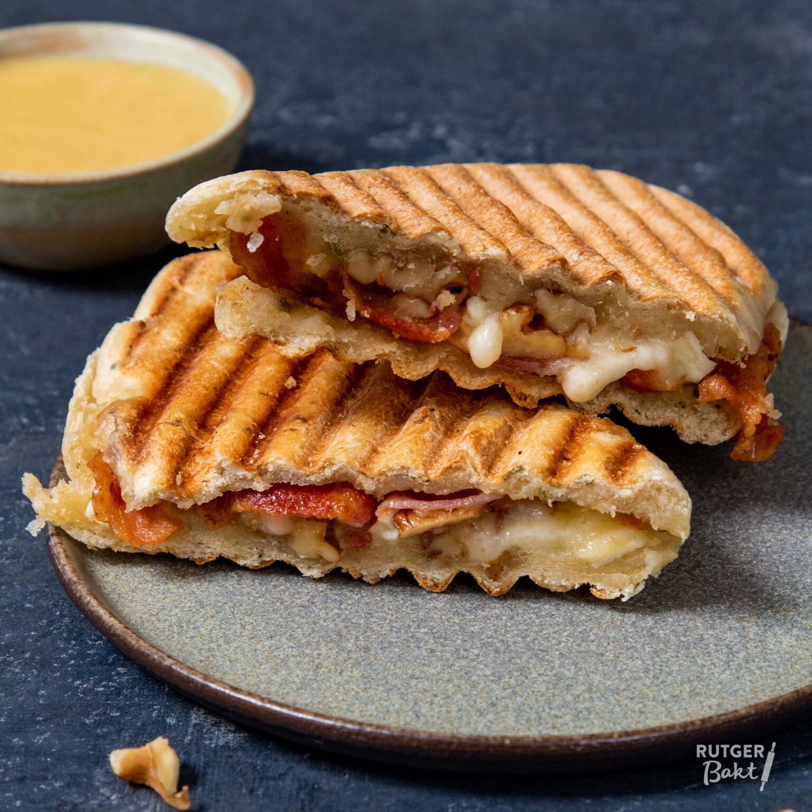

Panini met mozzarella

Ingrediënten
- 4 witte broodjes
- 4 el groene pesto
- 200 g tomaat
- 2 bollen mozzarella 125 g
- 20 g kappertjes
- 50 g parmezaanse kaas
- 20 g rucola
- 1 contactgrill
Bereiding
-
Snij de ongebakken broodjes open. Besmeer beide helften dun met de
pesto.
-
Beleg de broodjes met de tomaat en de mozzarella. Verdeel de kappertjes,
de geraspte kaas en de rucola over de belegde broodjes en dek af met de
bovenste helften van de broodjes.
-
Bak de panini in de contactgrill tot ze goudbruin zijn en de kaas is
gesmolten.